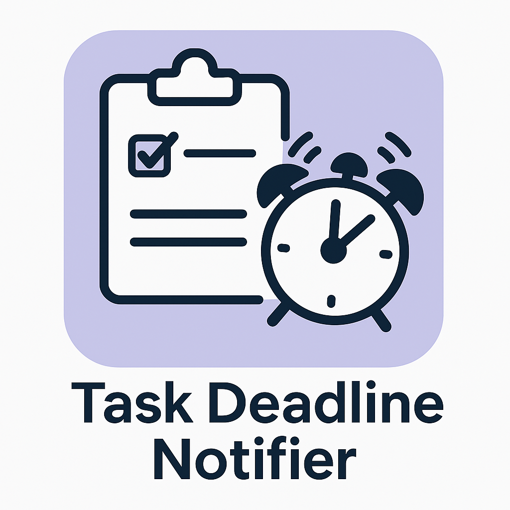

This module automatically sends email reminders to users assigned to tasks that are approaching their deadlines or are overdue. Keep your team on track and improve productivity with timely alerts.

Useful for project managers and teams who rely on Odoo Project for task management and want to avoid missing critical deadlines.
The email reminder includes task name, due date, and a short message encouraging the user to take action before it's late.
Simply install the module and it will start monitoring deadlines automatically!